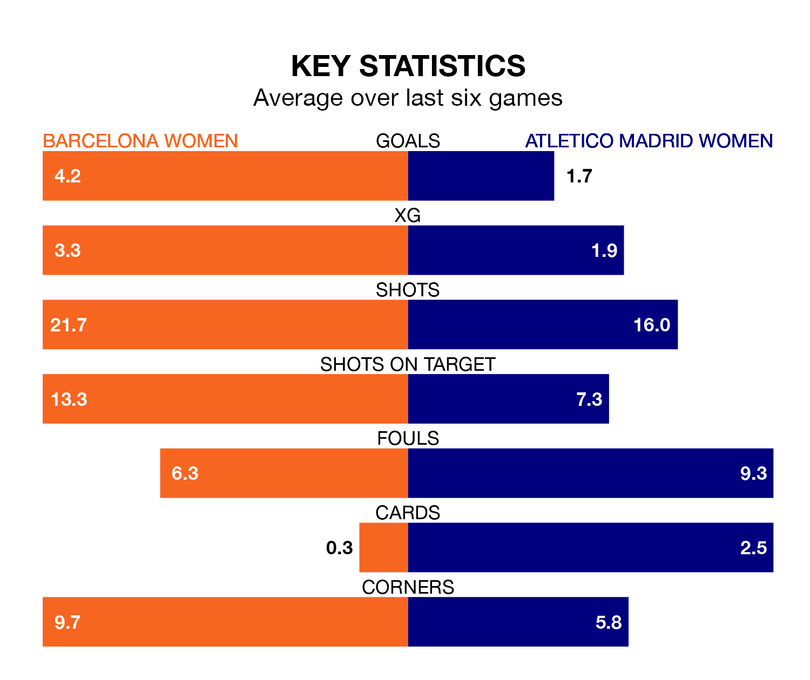

Two of Liga F's meanest defences go head-to-head at Estadi Johan Cruyff on Sunday, when Barcelona Women host Atletico Madrid Women.
No teams have conceded fewer goals than Barcelona to date: the home side have let in just four goals in 17 games.
Atletico Madrid have conceded 13 goals in 17 games, giving them the third tightest back line so far this season.
Key to Barcelona's home form has been Catalina Thomas Coll Lluch, who has allowed 0.11 goals past him per 90 minutes, compared to 0.81 for María Dolores Gallardo Nuñez in the opposite net.
Barcelona are top of the table after 17 games, of which they have won 16 and drawn one, earning 49 points.
Atletico Madrid are four places behind the home side in fifth, with nine wins and five draws putting them on 32 points.
In Caroline Graham Hansen, Barcelona have the league's sharpest shooter so far this season. She has notched 14 goals in 15 appearances.
Her goal rate of one every 74 minutes is quicker than that of Sheila Guijarro Gómez, the visitors' top scorer with a goal every 115 minutes, and a total of 12 goals in 17 games.
Barcelona are in fantastic form in Liga F, with five wins and a draw from their last six games.
With a win and four draws over that period, Atletico Madrid's form is much worse – they have taken seven points from 18, compared to the hosts' 16.
In the last 10 years, Barcelona and Atletico Madrid have played each other on 21 occasions. Barcelona won 12 of them, Atletico Madrid three, and they drew six times.
On average, Barcelona scored 2.0 goals and Atletico Madrid 0.7 in those matches.
Their last meeting was on October 15, when Barcelona won 1-0 away.
Barcelona's last match was on Wednesday, a 1-1 draw against Levante Women, with Salma Paralluelo Ayingono getting the goal for Barcelona.
Atletico Madrid drew 1-1 with Real Madrid Women last time out, also on Wednesday, with Guijarro Gómez on the scoresheet.
Updated: 13:04 (UTC), 16/02/24